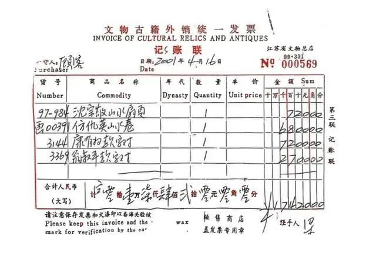

南京博物院#
以下 2 篇文章已经被相关平台删除。
兽楼处丨古董局中局
1923年，紫禁城的黄昏比以往来得更晚一些。
刚大婚不久的溥仪，日子过得并不舒坦。他偶然拿起新娘子婉容的凤冠，想欣赏一下皇家的气派.结果发现上面的珍珠、宝石和玉翠，成色有点不对劲。
找来行家一看，好消息是，东西都在；坏消息是：
全被人换成了假的。
大怒之下，溥仪决定搞一次全宫大清点。消息传出没两天，紫禁城西北角的建福宫，就突然“走水”了。
这是紫禁城历史上最严重的火灾之一。内务府统计，光金佛就烧毁2665座，字画1157件。但溥仪认为，这是糊涂账，统计根本不全面。
后世学者统计，建福宫光是陈设文物就超过1万件。这里汇聚了乾隆一生最喜欢的藏品，堪称整个紫禁城汇聚文物最多的宫殿。
比损失更糊涂的，是定责。民国大总统府派人来查，结论是“电线走火”。这结论妙就妙在，电线不会说话，所以：
没有责任人。
溥仪有次偷听太监们讲话，发现他们私下传话：
是皇帝自己放的火。
这还没完。溥仪一气之下裁撤了所有太监，还发了遣散费。结果拨下来的三五百大洋，经过层层盘剥，到了太监手里只剩下：
20块。
更魔幻的是，皇宫还得负责给来灭火的警察和消防员买单。账单里不仅有茶水费，还有冰激凌、香烟和葡萄酒。
晚年的溥仪在《我的前半生》里感叹，他原以为那些达官显贵是来救火的，后来才发现，他们是来趁火打劫的。
无数珍宝半借半拿地流出了宫墙，转身就进了北京城古董商的柜台。
那时候的溥仪还太年轻，不懂得文化人偷东西，那能叫偷吗？
01#
1958年冬天，知名收藏大家、庞莱臣的遗孀贺明彤，见到了阔别十几年的表弟郑山尊。
郑表弟这次来，不是为了叙旧，而是代表组织——江苏省文化局来的。
他先是痛陈革命家史，又大吐苦水，说现在的南京博物院有多困难，库房有多空虚。千言万语汇成一句话：
你们看能不能捐点儿？
在表弟的动员下，庞莱臣的长孙庞增和大手一挥，向南博无偿捐赠了137件“虚斋”藏品。这些画，每一件都是庞莱臣当年散尽千金从乱世中抢救下来的国宝。
其中大约80%，后来成了南博的一级藏品。
庞家人做事讲究，捐赠前，每一件文物都工工整整造了册。
1962年，南博又向庞家“征集”了11件文物。按照庞家人自己的说法，他们都以极为低廉的友谊价卖给了南博，只有一件藏品收费超过了1万块钱。
1963年，一位叫作徐沄湫的南博征集员，又来庞家“借”走2幅画。
这一借，就再也没有还过。
1988年，庞增和曾就这两幅画起诉过南博，南博的解释很硬气：不是借，是征集。唯一的瑕疵是：
忘了给钱。
法院采信了，判南博补这笔钱。加上30年的利息，总共赔了庞家：
4万块。
转眼多年过去，2014年，南博举办了一场盛大的庞莱臣名画展。庞莱臣的曾孙女庞叔令受邀参加，现场工作人员热情地给她介绍了一位“亲戚”，一位自称也是庞莱臣后人的古文物研究员：
徐莺。
庞家人发现，这位徐女士根本不是亲戚，而且徐女士几个月前还是个读生物学的本科生，研究方向大概是细胞分子。
没有人比徐女士更懂基因突变，变成庞莱臣后人她，已经在坦然接受媒体采访了。
庞令叔给南博写信询问此事，得到的回复是，徐莺还是个学生，以后不会发生这种事情了：
院领导也知道。
蚝南查了一下，现在徐莺对外的身份是杭州师范大学副教授，但不管是人文学院还是美术学院，都查不到徐莺的介绍和简历。
2024年，徐莺教授申请了国家社科基金，研究的专题竟然是：
庞莱臣的藏品。
真正让庞家人生气的是，那次策展人、南博副研究员庞鸥对外称，庞莱臣的后人沦落到了卖画为生。
庞叔令于是向法院提起了上诉。没想到这一上诉，牵出了一个惊天秘密。
02#
在法庭上，为了证明庞家人卖画，庞鸥不紧不慢拿出一份报道，报道称，庞莱臣收藏的一幅仇英《江南春》图卷于20世纪90年代，被芝兰斋购买收藏了。
庞叔令傻眼了，因为按照庞增和当年记载，这件藏品正是当年捐给南博的137件文物之一，怎么会在90年代流入市场了？
为了搞清楚真相，2024年庞家人发函给南博，要求看一眼当年的捐赠品。
结果当然是——没回音。
直到今年5月，庞叔令在北京嘉德的拍卖会上，再次看到了那幅《江南春》。起拍价：
8800万 。
在有关部门干预下，画作撤拍。庞家人拿着法院的调查令走进南博库房，才发现当年捐赠的137件文物里，已经有5件不翼而飞。
面对全网追问，南博终于摊牌了。
他们的说法是：早在上世纪60年代，专家就鉴定这5件是假画。既然是假的，留着占地方，便于90年代做了“划拨、调剂”。
调剂给了谁呢？江苏省文物总店。
文物总店又卖给了谁呢？发票显示，2001年，这幅画改名为《仿仇英山水卷》，以6800元的价格，卖给了一位神秘的：
“顾客”。

这里面的逻辑，比电视剧还精彩。
首先，60年代就鉴定是假的，为什么要捂到90年代才处理？
其次，马未都都说了，当时买文物得实名，除非这买家姓“顾”名“客”。
再次，6800元卖掉的东西，怎么一转手就变成了8800万？
最绝的是，根据2018年的规定，能退出馆藏的，必须是“无文物价值的现代复仿制品” 。
但根据彼时鉴定意见，江南春图卷伪作极好，还有陈鎏的题引是真的。陈鎏是明朝人。用马未都的话说就算是假的，这幅画：
也绝对不是这个价钱。
还有，根据当年庞家人说法以及媒体报道，2010年，曾有媒体报道过，这幅画在上世纪90年代，就已经被艺兰斋陆挺夫妻收藏，怎么又变成了2001年卖出？
而且商品名也不对。一个是仇英《江南春》图卷，一个是《仿仇英山水卷》。
目前，江苏省文旅部门宣布介入调查，南博也没有再予以回复。
有网友称，当时鉴定的都是大家，权威性不容置疑。问题是，一来鉴定的专家都已经去世了。二来，专家们业务能力是一回事，会不会配合博物院又是另外一回事。
这5件文物，会不会像当年的建福宫大火一样，变成了一笔糊涂账。
事实上，和《江南春》图卷一起被划拨给文物总店的文物，共计达：
1259件。
有记者采访了当年签字同意划拨的南博原副院长徐湖平。徐院长回复得很干脆：
我不是鉴定专家，这事没经我手。
他还表示，自己退休多年，身体不好，一直在家养病。
但我查了一下，就在去年，80多岁的徐老院长还出席了活动，在台上滔滔不绝讲了40多分钟。媒体报道说他记忆力惊人，对南博几十年前的往事：
讲起来恍若昨天。
徐老院长的记性确实好，但还有人的记性比他更好。
这两天，南京博物院典藏部退休职工郭礼典，在视频里实名举报了这位老领导。
郭师傅举报了很多年，直到这两天才被看见。他说当年把真文物鉴定成假文物，再划拨给文物总店，并不是什么管理疏忽，而是一条产业链。
文物商店转手把这些“赝品”，倒卖给了一家上海的拍卖公司，最终都流向：
海外和私人藏家。
03#
对于南博来说，这样的事情，历史上发生远不止一次。
根据著名文史学家、红学家冯其庸的回忆，上世纪80年代，时任南京博物院院长的姚迁曾向他抱怨：
很多老干部会向博物院“借”走字画。
出于职责所在，姚迁经常要硬着头皮去找老干部们催要文物。再后来，姚迁被免职。
再然后他就自杀了。
1992年到1993年，南博一位担任保管员的员工陈超，曾先后盗取博物馆文物19件，然后以3万元价格倒卖挥霍，最后被枪毙。
1993年，一群紫金山中学的学生们来到南博参观，在经过大殿时，有同学发现右侧石柱有一把折叠伞一样的东西，写着字画。
这幅跟折叠伞一样，被随手扔在大殿外石柱边上的，是南博馆藏的明代画家丁云鹏的《云山雾霭图》。
直到半个月后，还是学生主动告知，才物归原主。
不仅仅是南博，对于公立博物馆来说，“消失的藏品”从来不是新鲜事。
浩南翻到过一份1980年由公安部、文物局和文化部下发给各地文物主管单位的通知，里面说：
有单位被偷了20多次，被偷了五百多件文物都没发现；
很多单位被偷了之后，压根说不清楚自己到底丢了多少文物。
相比之下，广州美术学院的萧元馆长，路子就野得多。
萧馆长有个绝活：画画。他利用当图书馆馆长的便利，配了一把没人知道的备用钥匙。
每逢周末，萧馆长就去库房加班。他把齐白石、张大千的真迹带回家，临摹一幅假的放回去。几年下来，他用这种“狸猫换太子”的手法，调包了143幅名画.
这些真迹，后来都堂而皇之地上了拍卖会，卖了3000多万。
直到2014年，一位广美校友在香港拍卖会上发现了一幅盖着“广州美术学院图书馆藏”印章的画作，这才东窗事发。
最讽刺的是，这些假画在图书馆里挂了好几年，美院那么多教授、学生，愣是没一个人看出来。萧元后来在法庭上说了一句大实话：
我看以前的画也有假的，说明在我之前，早就有领导这么干了。
作家丁捷在《追问》里记录过一个更离谱的故事。
一位文化厅的副厅长透露，他有个下属叫“大张”。有一次，厅里发愁一家文化厅直属的宾馆亏损严重的问题。
大张知道后，先是主动帮组织分忧，把老招待楼盘下来，不要组织一分钱，新建翻修，保证3年盈利。把领导高兴坏了，觉得大张懂事。
一开始，纪委的同志还以为大张是靠工程款贪污。结果查了半天账目，发现大张一分钱没捞。真正的玄机在这栋楼里，有无数书画家在这里写字作画，楼道房间，都挂满了省内知名大师的作品。
大张的算盘打得噼啪响：他先把真品拿走，再把赝品挂上去糊弄，等熟悉这里的老干部们，退休的退休，去世的去世，就彻底把这些字画据为己有了。
这些画本来就没有入账，将来就算有人发现不对，也是一笔死无对证的糊涂账。大张的名言是：
谁能说得清楚呢？
庞家也不是唯一发现捐赠品出问题的。闻一多的堂弟闻钧天向浠水县文化馆捐献了150多件画作，到现在只剩下63件。文化馆工作人员回复：
被领导拿去送人了。
《潜伏》里，站长吴敬中就曾说过，那些珍贵的文物，应该由合适的人来收藏：
穆连成那个奸商他懂什么呀？
04#
南博的事儿一出，很多网友痛心疾首，说早知如此，还不如把文物交给大英博物馆保管。
朋友，你还是太迷信洋大人了。在“古董局中局”这个游戏里，没有国界，只有段位。
大英博物馆一向标榜自己是“世界文明的保险箱”。当年希腊人去讨要帕特农神庙的石雕，英国人就是这么怼回去的：
你们那儿不安全，放我这儿最放心。
这个牛皮，在2023年被戳破了。
一位叫彼得·希格斯的资深策展人，在大英博物馆工作了30年。他负责的，正是希腊和罗马馆。
从2016年开始，就有古董商在eBay上发现了一些奇怪的藏品。有些是从未展出过的宝石，有些是虽然残破但工艺精湛的黄金饰品。
售价低得感人，有的只要几百英镑。
古董商多次举报，大英博物馆的高层却充耳不闻，甚至把举报人当成疯子。
直到2023年，盖子终于捂不住了。
调查发现，大概有1000多件文物不翼而飞。希格斯先生蚂蚁搬家一样，把这些人类文明的瑰宝揣进兜里，挂上eBay，换成了自家的燃气费和超市账单。
这就是那个号称“最安全”的地方。
FBI艺术犯罪组的专家说过，他抓过的艺术品大盗里，有穷人，有富人，有聪明的，有笨的。但他们都有一个共同点：
以为自己是这些宝物的主人。
但无论是紫禁城的太监，南博的“顾客”，还是大英博物馆的策展人，他们都搞错了一件事。
文物之所以叫文物，是因为它们活得比人久。
乾隆爷盖了那么多章，最后建福宫还是烧了；庞莱臣收了那么多画，最后还是散了；大英博物馆抢了那么多东西，最后还是被自家员工偷了。
庞莱臣给自己起过一个斋号，叫“虚斋”。
这位民国最大的藏家早就参透了收藏的本质，纵有家财万贯，也不过是替后人暂时保管：
物藏不过三代。
1949年，庞莱臣去世，庞家面临抉择。
当时庞元济的嗣子庞秉礼，是国民党名将孙立人的秘书。他们连运送家产的军车、船只都安排好了。画箱也打包完毕，只要一声令下，这些国宝就能运往海峡对岸。
但庞元济的孙子庞增和，看着这些祖父穷尽一生心血搜集的瑰宝，做出了一个决定。他说，孤儿寡母的，去台湾很难保全这些东西：
庞家的根，在江浙。
他留了下来，并把其中137件心血，捐给国家，想给这些在乱世中飘摇的国宝，找一个永远的避风港。
但他可能没想到，博物馆也是由人组成的。只要是人，就逃不过人性的弱点。
六十年后，他的后人在冰冷的拍卖目录里，与画重逢。
江南春色今犹在，不见当年献宝人。
李宇琛｜国宝的名义
2025年5月下旬，北京一家顶级拍卖公司的秋拍预展上，一件估价高达8800万元人民币的明代画卷，悄无声息地出现在了VIP客户的图录里。这幅名为《江南春》的青绿山水图卷，笔法细腻，意境深远，被认为是“吴门四家”之一仇英的传世真迹。
几天后，远在上海的庞叔令女士看到了这份图录。这幅画，本应安静地躺在400公里外的南京博物院库房里。它是66年前，她的父亲庞增和，亲手交给国家的137件家藏珍宝之一。
面对画作主人、收藏大家庞莱臣后人的惊愕与国家文物部门的紧急问询，拍卖被迅速撤下。而本应是失窃案“受害者”的南京博物院，却给出了一个更加令人错愕的解释：
这幅画连同另外四件庞家捐赠的珍品，早已被专家鉴定为伪作，并按规定“处理”掉了。
故事的另一端，要从一个世纪前说起。
庞莱臣这个名字，在中国近现代收藏江湖里，是一块金字招牌。这位出身浙江南浔“四象”之一庞家的实业家，不仅富甲一方，更好收藏。他眼光毒辣，出手阔绰，经手的历代名迹，后来悉数收录于一套名为《虚斋名画录》的书中。
能入此书的，皆为旷世奇珍。
1949年，庞莱臣去世。他的后人继承了这批足以买下半个上海的宝藏，也继承了这位老先生深植于心的家国情怀。他们深知，这些民族瑰宝的最终归宿，不应是自家的画室，而应是属于全体人民的殿堂。
1959年，庞莱臣之孙庞增和与家人做了一个郑重的决定，将家藏的137件（套）“虚斋旧藏”古书画，无偿捐献给了国家。
接收单位，是当时全国三大博物馆之一的南京博物院。
这批文物里，就有那幅日后搅动风云的《江南春》图卷。
为了表彰这一义举，1962年11月，江苏省人民委员会在苏州专门召开了颁奖大会。时任南博院长、我国第一位考古学女博士、著名的“南曾北夏”之一的曾昭燏先生，亲笔为庞家题写了一纸奖状。
白纸黑字，红星为印，上面写着：
庞增和先生将家藏古代书画一三七件捐献给国家，特给此状，以资褒奖。
这份信任，本应重于千金。
庞家人也一直这么认为。他们相信，博物馆是时间的保险柜。正如另一位捐赠大家、画家潘天寿先生在1951年捐出自己的得意之作《墨竹图》时所言：
藏之于公，方能传之千古。
这是那一代知识分子最朴素的信念。他们不求金钱的回报，但求精神永驻。他们相信，将私人的审美记忆，托付给一个永恒的公共机构，是使其不朽的最佳方式。
然而，时间的保险柜，有时也会自己打开门。
而且，是以一种他们从未想象过的方式。
1#
庞家人对南京博物院的不信任，并非始于2015年那场关于卖画为生的名誉权官司，而是源自一场更早的、几乎被遗忘的“借画”悬案。
时间回到1963年，距离庞家第一次大规模捐赠仅仅四年。
那一年，南博的一位工作人员徐沄秋，以筹办画展为名，登门拜访了庞增和。他希望能从庞家尚未捐出的藏品中：
借走两幅画作临时展出。
这两幅画，一幅是元代大家吴镇的《松泉图》轴，另一幅是清初“四王”之一吴历的《仿古山水册页》。
徐沄秋当时承诺，展期仅三个月，展毕即刻归还。
庞增和应允了。毕竟，对方是代表国家级的博物馆，这点信任还是有的。
但这一借，就是：
一生。
三个月后，画没有还回来。一年后的1964年12月，一个不幸的消息传来，德高望重的南博院长曾昭燏先生自杀身亡。
一个时代的文化巨星陨落，整个南博乃至江苏文博界都陷入了动荡与悲痛。
庞增和心中虽然焦急那两幅画的归属，但也深知人情世故。他在后来对家人说，实在不好意思在这个节骨眼上，去向一个刚刚失去院长的单位“讨画”。
这一“不好意思”，就等了十几年。
直到1979年，庞增和夫妇才开始重新踏上追讨之路。在接下来近十年的时间里，他们一次又一次地前往南博，询问那两幅被借走的画的下落。
得到的回应，总是含糊其辞，或者干脆：
均无结果。
1988年，耐心耗尽的庞增和，将南京博物院告上了法庭。他的诉求很简单：确认那两幅画的所有权。
然而，由于当年君子之交般的出借并无留下任何书面借据，这场官司最终以一个让庞家难以接受的方式了结。
法院判决，这两幅画并非借用，而是：
征购。
判决要求南博向庞增和支付2.6万元画款，外加2.8万元的利息。用五万多块钱，为这桩悬了二十多年的公案，画上了一个法律上的句号。
这件事，成了庞家人心头一根深深的刺。它让他们第一次意识到，在与公共机构的交往中，单纯的信任是多么脆弱。
但他们依然没有想到，这种脆弱的信任，还会在二十多年后，以一种更具侮辱性的方式被再次撕开。
2#
2015年初，庞家后人因为南博在一篇展览宣传文章中使用了“庞莱臣子孙败落到卖画为生”的表述，起诉南博及作者侵犯名誉权。
为了在法庭上证明庞家确有卖画的行为，从而论证其文章表述并非捏造，南博的代理律师向法庭提交了一份证据。
这份证据，正是那幅本应在1959年就被庞家无偿捐赠的仇英《江南春》图卷。
南博方面称：
此画早已不在院内，而是被一家名为南京艺兰斋的机构所收藏。
那一刻，坐在原告席上的庞叔令彻底懵了。
自己家捐给博物馆的国宝，怎么会流落到一家私人机构手里？又怎么会反过来，成为对方在法庭上攻击自家卖画为生的武器？
这比魔幻现实主义还要魔幻。
诉讼结束后，庞叔令越想越不对劲。从2016年开始，她持续向南博写信，提出了一个在任何捐赠者看来都再也合理不过的要求：
查验当年捐赠的全部137件藏品现状。
面对这个要求，南博的回应，比十几年前的均无结果更加直接和冷漠。他们以一个令人瞠目结舌的理由，拒绝了庞叔令：
你不是捐赠人本人。
法律的铁锤，最终还是敲开了南京博物院尘封已久的库房大门。
在法院出具民事调解书后，南博终于同意，在2025年6月30日前，安排庞叔令查验那批捐赠了66年的藏品。
然而，就在查验日期到来前的一个月，2025年5月下旬，一个更惊人的消息传来。
庞叔令在一位朋友发来的电子图录里，看到了那幅让她魂牵梦萦的画卷。画面上的青绿山水，正是她祖父口中念叨过无数次的，仇英的《江南春》。
它出现在北京一家顶级拍卖公司的春拍图录上，被作为最重要的拍品之一隆重推出。图录为其撰写了洋洋洒洒的考证文章，称其为“市场仅见的仇英青绿山水杰作”。
起拍价：
8800万。
3#
在庞叔令向国家文物局紧急举报后，这场即将上演的拍卖大戏，被按下了暂停键。
拍卖公司撤拍了这件藏品。
但风暴，才刚刚开始。
2025年6月底，庞叔令与她的代理律师尹志军，如约走进了南京博物院。
清点的结果，与他们的预感完全一致。
当年捐赠的137件（套）藏品，如今只剩下132件。除了那幅刚刚在拍卖场上一日游的《江南春》，还有另外四幅画作也消失了：
宋代赵光辅的《双马图轴》、明代王绂的《松风萧寺图轴》、清初王时敏的《仿北苑山水轴》和清代汤贻汾的《设色山水轴》。
一个月后，南博给出了姗姗来迟的书面答复。
这份答复，彻底点燃了庞家人的怒火。南博称，这5件缺失的藏品，早在1961年和1964年，就经过院内专家组的两次鉴定，结论均为：
伪作。
因此，这些伪作已于上世纪90年代，根据当时新出台的《博物馆藏品管理办法》，从藏品序列中“剔除”，并进行了：
“划拨、调剂”处理。
至于划拨给了谁，调剂去了何方，答复中没有说明。
这个解释，每一个字都充满了漏洞和傲慢。
庞叔令的反驳直截了当。首先，我的曾祖父庞莱臣，是业内公认的收藏大家，眼光毒辣，他的收藏可能会有争议，但绝不可能把一堆赝品当成宝贝捐给国家。
其次，即便退一万步说，你们鉴定下来认为是伪作：
你通知我们，退还给我们不就行了吗？
这是最朴素的人之常情。
还有，就算你不退，那这5件你认为是假作的藏品，到底去了哪里？
面对这个问题，南博说，不清楚。
当庞家的代理律师要求南博出示当年的鉴定材料时，他们拿出的东西，更像是一个笑话。
那是一份1964年的文件影印件，标题是《王敦化、徐沄秋、许莘农三同志意见纪录》。但文件的核心内容，几乎全部被打上了厚厚的马赛克，密密麻麻，无法辨认。
在像素格的缝隙里，只有一个潦草的手写字，依稀可见：
伪。
更令人匪夷所思的是，这份关键文件的鉴定人员，并非外界想象的文博界泰斗。根据庞叔令的说法，他们只是南博的普通工作人员，其中一位，甚至都不是书画鉴定专业的。
一个非专业的普通员工，在一份打满马赛克的文件上，用一个“伪”字，就宣判了一幅未来估价8800万的名画的死刑。
这听起来像天方夜谭。
而整起事件最致命的疑点，也正在于此。正如文化学者马未都的质问：
如果它真的是一件赝品，为何能在今天最严谨的商业拍卖市场上，获得8800万的天价估值？难道拍卖行和那些准备砸下真金白银的顶级买家，都是傻子吗？
更何况，根据新华社记者后来查到的物证，这幅画在2001年被“处理”时，价格仅为：
6800元。
从“赝品”的6800元，到“珍品”的8800万，中间相差了一万两千多倍。
这中间巨大的价值鸿沟，到底是谁在扮演“上帝之手”？
4#
就在庞家后人与南京博物院的“伪作”之争陷入僵局时，一个来自博物馆内部的声音，像一把锋利的手术刀，切开了事件最深处的脓包。
2023年12月21日，一位名叫郭礼典的南博退休保管员，手持自己的退休证和工作证，出现在一段实名举报视频中。
他举报的，正是他当年的老领导——从一个高中学历的印刷工人，最终执掌南博二十余年的传奇院长，徐湖平。
徐湖平的履历，本身就是一部传奇。
视频中的人物简介显示，这位日后的文博巨擘，仅有高中文化。他参过军，退伍后在1969年进入印刷厂当工人。直到1973年，毫无文博经验的他被调入南京博物院。
12年后，40岁的徐湖平便被任命为：
南博副院长，官至正处。
郭礼典的指控，不再纠结于某一幅画的真伪，而是指向了一场系统性的、大规模的监守自盗。
在他的描述中，一条清晰的利益链条浮出水面：
第一步，利用院长职权，将馆藏的珍贵文物——特别是无人敢动的故宫南迁文物，指使专家鉴定为”赝品”。
第二步，将这些“赝品”以极低的价格，“划拨”给自己同时担任法人代表的：
江苏省文物商店。
第三步，再由其在上海开设拍卖行的儿子，将这些文物高价倒卖给国内外的富商和贩子，从中牟取暴利。
郭礼典在视频中称，被如此操作的国宝，多达：
上千件。
如果说，南京博物院的“名画门”还隔着一层“鉴定争议”的迷雾，那么郭礼典的举报，则让人想起了另一起更加触目惊心的案件。
广州美术学院图书馆前馆长萧元，一位著有《书法美学史》的专家。在2002年到2010年间，他用自己临摹的赝品，系统性地调换了馆藏的143幅名家真迹，包括齐白石、张大千和八大山人。
他从藏品库里拿走了143幅真迹。
又一丝不苟地，放回去了143幅赝品。
其中125幅真迹被他送去拍卖，获利超过3400万元。全案涉案金额，高达1.1亿元。
当守护者变成了最高效的盗窃者，当专业知识沦为最锋利的犯罪工具，整个体系的防火墙便形同虚设。这或许正是鲁迅先生的远见，他在近百年前的文章《谈所谓“大内档案”》中就曾断言：
“中国公共的东西，实在不容易保存。如果当局者是外行，他便把东西糟完；倘是内行，他便把东西偷完。”
面对排山倒海的质疑和前下属的实名举报，80多岁的徐湖平在家中接受了采访。
他坐在古色古香的太师椅上，神态平静，给出了自己的“四不”回应：不了解、不参与、不经手、不专业。
事实上，在此前的一次公开演讲中，徐湖平曾为自己树立了一个无比清高的形象。
视频里，他对着满堂听众侃侃而谈：
“我当院长当了27年，我从来不在民间买一件东西。你们懂吧，这做官的诀窍。如果我买了，现在是检举的时代，他说你这个500万的东西，5万块钱都不值，他跟那两个私交，100万卖掉，他拿回扣拿了50万，我洗都洗不清，只有跳楼自杀。“
如今看来，他不是怕被检举，而是深谙此道。
视频最后，他把一切都交给了组织：
等上级调查结果。
然而，新华社记者的调查，很快让这份看似无懈可击的回应出现了裂痕。
记者查到的文件显示，1997年那份关键的划拨报告上：
有他清晰的签名。
而接收那批“处理品”的江苏省文物总店，他也曾是：
法人代表。
更不用说，那位以6800元买走《江南春》的神秘“顾客”陆挺，正是他担任会长的江苏省收藏家协会的顾问：
会长签字调拨，法人代表接收，协会顾问购买。
一个完美的流程。
这个闭环，不仅用来变现，更用来“镀金”。
就在《江南春》被低价“处理”前后，一个叫徐莺的女子开始崭露头角。视频资料显示，她对外一直以收藏大家庞莱臣的“曾外孙女”身份示人。
但她的真实专业，是：
植物病毒学。
在举报者的描述中，一条围绕“身份造假”的学术腐败链条同样清晰：
第一步：认假祖宗。在徐湖平的运作下，将毫无血缘关系的徐莺塞进庞氏家族的族谱。
第二步：学术洗白。凭借“庞氏后人”的假户口，让研究植物病毒的徐莺，硬生生将研究方向扭转为“庞家收藏”，并以此为题：
在中国美院拿到艺术史博士学位。
第三步：权威站台。2014年，在南博的一场重要展览上，时任院长的徐湖平亲自下场，向全场宣布徐莺就是庞氏后人，用自己的权力为她的假身份背书。
尽管早在2016年，法院就已判决徐莺的身份造假，但这条为她量身定制的“博士通道”，早已铺就。
5#
如今，国家文物局和江苏省的联合调查组已经进驻南京。
调查组进驻两天后，根据一些流传的视频，2025年12月22日晚10点，疑似多辆公务车辆包围了徐湖平位于南京后半山的别墅——一栋被列为文物保护单位的民国建筑。
行动一直持续到23日中午12点半。
那栋平日极少开灯、被戏称为“像鬼灯一样”的别墅，前一夜灯火通明。有些视频声称，徐湖平夫妇及保姆被一同带走。
目前，这栋位于幽静小路尽头的民国别墅，迅速成了南京市民最新的网红打卡地。人们争相前来，对着那扇紧闭的大门拍照、直播，仿佛在围观一个巨大时代的荒诞落幕。
1959年，庞增和先生将家族的珍宝献给国家时，他所托付的，是一种能让文化血脉“传之千古”的信任。
66年后，这份信任的守护者，在自家那座同样是“文物”的别墅里，被带走了。时间的保险柜最终关上了，但代价是什么呢？
这种信任，是张伯驹捐出《平复帖》时拒收20万奖金的淡泊；是徐悲鸿夫人廖静文将丈夫1200件遗作全部捐出的无私。
这是中国捐赠者最朴素的高贵。他们不求金钱的回报，但求精神永驻。
可当传家宝变成拍卖图录上的冰冷编号时，我们伤害的，何止是庞家后人的心呢？
一个社会的文明程度，很大程度上取决于它如何对待那些无私的奉献者。当时间的保险柜自己都开始监守自盗，当传之千古的承诺变成低价处理的生意，我们又该将民族的记忆托付给谁？
李宇琛的文立于尘
写于2025年12月26日
2026.1.10